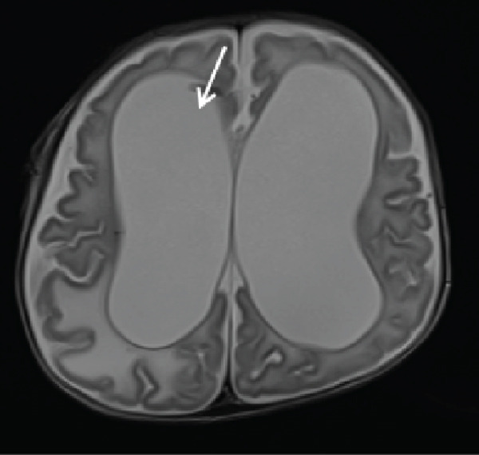
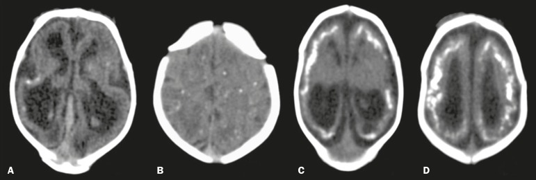
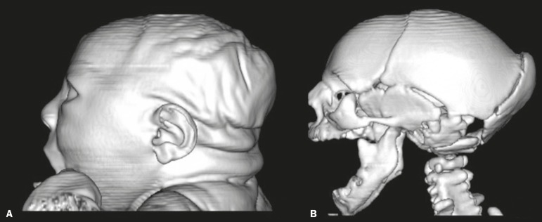
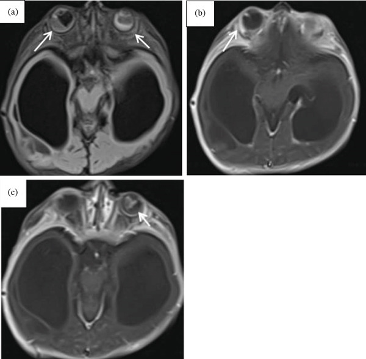

6103 — Nhiễm Toxoplasma và Zika bào thai (congenital toxoplasmosis & congenital Zika): vôi hóa rải rác vs vôi hóa ranh giới vỏ–chất trắng
Tags: pattern:voi-hoa-noi-so pattern:dan-nao-that pattern:viem-hac-vong-mac pattern:mong-vo-nao vung:nao-thai vung:mat protocol:MRI-thai protocol:sieua-am-thai incidentaloma:khong
Mức chắc chắn (certainty): tổng hợp y văn (literature synthesis) — 1 nghiên cứu 235 ca huyết thanh chuyển đổi (PMC11858150), 1 tổng quan chẩn đoán (PMC11671817), 1 phân tích gộp điều trị (PMC12029831), 1 đoàn hệ 16 sơ sinh Zika có CT (PMC6290748), 1 tổng quan Zika (PMC11943202) và 1 ca nguyên văn toxo không điển hình (PMC13051784). Mọi số liệu đối chiếu PMCID trong sources.md; bài không thay thế bài 6102 (CMV) mà bổ sung 2 hàng còn thiếu của bảng TORCH.
1. Tổng quan bệnh học – cơ chế hình ảnh
- Toxoplasma gondii (ký sinh trùng nguyên bào): lây qua thịt sống, rau quả/nước nhiễm oocyst từ phân mèo. Nhiễm tiên phát ở mẹ → nhiễm huyết tương (tachyzoite) → qua nhau thai → thai. Toàn cầu ~190.000 ca toxo bẩm sinh/năm, tỷ lệ 1–14/10.000 trẻ sinh sống tùy vùng.
- Vì sao nguy cơ truyền TĂNG theo tuổi thai nhưng độ NẶNG GIẢM: nhau thai dày và diện trao đổi tăng dần → truyền dễ hơn về cuối thai; nhưng 3 tháng đầu là cửa sổ sinh sản – di trú tế bào thần kinh, nên tổn thương nặng nhất. Nghiên cứu Pháp 5.000 ca huyết thanh chuyển đổi: truyền 2,2% ở tuần 6, 23,0% ở tuần 18, 56,0% ở tuần 30.
- TẠI SAO vôi hóa RẢI RÁC (khác CMV): toxo lan theo đường máu tới nơi có mao mạch dày (ranh giới vỏ–chất trắng, hạch nền, đồi thị) → ổ hoại tử nhỏ rải rác → canxi hóa loạn dưỡng trong mô hoại tử (canxi phosphate vô định hình). Canxi có hệ số suy giảm rất cao → siêu âm: echo dày + bóng lưng; CT: > 100 HU; MRI T2/T2* giảm tín hiệu. CMV thì ưu tiên ma trận mầm quanh não thất nên vôi hóa quanh não thất.
- TẠI SAO dãn não thất nặng: viêm màng não – não thất do toxo gây viêm nội mạc ống Sylvius + tắc hấp thu dịch não tủy → não úng thủy tắc nghẽn (ca điển hình: dãn hai não thất bên rất lớn, vỏ não mỏng như tờ giấy). Đây là lý do hydrocephalus nằm trong tam chứng, chứ không chỉ "dãn nhẹ".
- TẠI SAO viêm hắc–võng mạc: võng mạc giàu mao mạch, ký sinh trùng tạo nang trong tế bào võng mạc → viêm hoại tử hắc–võng mạc, thường hai bên, tái phát, để lại sẹo teo + tăng sắc tố. Trên MRI: dày, tăng tín hiệu T1 sau tiêm ở lớp hắc–võng mạc (ca Fig. 3); đáy mắt sau sinh là chốt.
- Vì sao đa số KHÔNG có triệu chứng: 75–85% trẻ nhiễm toxo bẩm sinh bình thường khi khám sơ sinh; ~20% có dấu hiệu lâm sàng. Tam chứng cổ điển (dãn não thất + vôi hóa nội sọ + viêm hắc–võng mạc) nay ít gặp đầy đủ, và có thể không có vôi hóa (ca nguyên văn: dãn não thất + tổn thương dạng vòng ngấm thuốc + viêm hắc–võng mạc hai bên, không vôi hóa).
- Zika (flavivirus): hướng tế bào tiền thân thần kinh → giảm sinh sản tế bào thần kinh, vỏ mỏng, giảm thể tích não, vôi hóa tại ranh giới vỏ–chất trắng dưới vỏ, đầu nhỏ nặng, arthrogryposis do tổn thương neuron vận động tủy. Dịch Brazil 2016: > 4.300 ca đầu nhỏ.
- Số liệu định lượng của Zika trên CT (16 sơ sinh, PMC6290748): giảm thể tích não 81,2%; vôi hóa 100% (dạng chấm 56,2%, thô 43,7%), luôn ở ranh giới vỏ–dưới vỏ, thùy trán 100%, thùy đỉnh 68,7%, thùy chẩm 50%, thùy thái dương 43,7%, hạch nền 12,5%, đồi thị 25%, thân não 12,5%; dãn não thất 93,7%, colpocephaly 62,5%, xương chẩm nhô 56,2%, thiểu sản tiểu não 18,7%; đầu nhỏ 12/16 (75%).
2. Mẫu hình + chẩn đoán phân biệt theo vị trí (gamut)
- Mẫu hình A — vôi hóa RẢI RÁC (vỏ + hạch nền) + dãn não thất tiến triển + viêm hắc–võng mạc: toxoplasmosis bẩm sinh; phân biệt LCMV (rất giống toxo, cần PCR), Aicardi–Goutières (vôi hóa hạch nền + lympho bào dịch não tủy tăng), nhiễm trùng mẹ dùng thuốc/ngộ độc.
- Mẫu hình B — vôi hóa QUANH NÃO THẤT + nang dưới nội tủy + bất thường vỏ não: CMV (xem bài 6102) — vôi hóa mảnh, đường viền quanh não thất, không rải rác.
- Mẫu hình C — vôi hóa RANH GIỚI VỎ–CHẤT TRẮNG + vỏ mỏng + đầu nhỏ + arthrogryposis: Zika bẩm sinh; phân biệt giả nhiễm trùng do thiếu máu–giảm tưới máu (song thai), đầu nhỏ di truyền (MCPH), ngộ độc rượu bào thai.
- Mẫu hình D — tổn thương DẠNG VÒNG ngấm thuốc, không vôi hóa: toxo thể hoại tử – áp-xe não (ca nguyên văn); phân biệt áp-xe vi khuẩn, di căn/u nguyên bào, tổn thương do CMV (thường không tạo vòng ngấm thuốc rõ).
- Mẫu hình E — bất thường ngoài thần kinh đơn độc (gan–lách to, ruột echo dày, cổ trướng, FGR, nhau dày): toxo, CMV, Zika, rubella, giang mai, parvovirus B19, bất thường nhiễm sắc thể.
- Gợi nhớ: Toxo = Tán xạ (rải rác) + Thủy hoại (vòng ngấm thuốc) + Tật mắt; Zika = Zone dưới vỏ (ranh giới vỏ–chất trắng) + Zero cortex (vỏ mỏng).
3. Bảng so sánh phân biệt (ma trận đối chiếu)
| Thực thể (entity) | Hình ảnh điển hình (US/MRI/CT) | Chốt vào (rule-in) | Chốt loại (rule-out) | Gợi ý xác nhận |
|---|---|---|---|---|
| Toxoplasmosis bẩm sinh | Vôi hóa rải rác vỏ + hạch nền (50–80% ca có vôi hóa), dãn não thất nặng/tắc nghẽn, viêm hắc–võng mạc hai bên, có thể tổn thương vòng ngấm thuốc | Vôi hóa rải rác + dãn não thất tiến triển + tổn thương mắt + huyết thanh học mẹ dương | Vôi hóa chỉ quanh não thất + nang dưới nội tủy → CMV; không có bất thường não không loại trừ (75–85% không triệu chứng) | IgG/IgM + avidity, PCR dịch ối, soi đáy mắt sau sinh, IgM/IgA sơ sinh |
| CMV bẩm sinh | Vôi hóa quanh não thất dạng chấm/đường, nang dưới nội tủy, polymicrogyria thùy thái dương, tiểu não nhỏ | Vôi hóa quanh não thất + nang dưới nội tủy + PCR dịch ối dương | Vôi hóa rải rác hạch nền/vỏ + tổn thương mắt → toxo | PCR CMV dịch ối sau 21 tuần; MRI 28–32 tuần (bài 6102) |
| Zika bẩm sinh | Vôi hóa ranh giới vỏ–chất trắng (trán 100%), vỏ mỏng, giảm thể tích não, dãn não thất, colpocephaly, arthrogryposis, xương chẩm nhô | Vôi hóa dưới vỏ + vỏ mỏng + đầu nhỏ + dịch tễ vùng lưu hành | Vôi hóa quanh não thất + não thất bình thường → không phải Zika điển hình | RT-PCR Zika huyết thanh/nước tiểu mẹ, IgM thai; siêu âm khớp |
| LCMV bẩm sinh | Giống toxo: vôi hóa rải rác, dãn não thất, viêm hắc–võng mạc, đầu nhỏ | Hình ảnh giống toxo nhưng huyết thanh toxo âm + tiền sử chuột hamster | Không phân biệt được bằng hình ảnh | RT-PCR LCMV; dịch tễ tiếp xúc |
| Aicardi–Goutières | Vôi hóa hạch nền/vỏ, teo não, thanh dịch lympho bào tăng; giống "nhiễm trùng" nhưng không tìm được tác nhân | Vôi hóa + lympho bào dịch não tủy tăng + interferon alpha tăng | PCR toxo/CMV dương → nhiễm trùng thực sự | Gen TREX1/RNASEH2; interferon signature |
| Thiếu máu–giảm tưới máu (song thai) | Tổn thương chất trắng quanh não thất, polymicrogyria, teo vỏ ở thai nhỏ hơn | Song thai một bánh nhau + chênh cân nặng + không bằng chứng nhiễm | Vôi hóa rải rác + tổn thương mắt + huyết thanh dương → toxo | Doppler, MRI thai, theo dõi song thai |

MRI não sơ sinh 2 tháng tuổi: dãn hai não thất bên rất lớn, vỏ não mỏng, não úng thủy tắc nghẽn (mũi tên: vùng ống Sylvius/lỗ Monro). Cùng ca: không có vôi hóa nội sọ trên CT — nhắc rằng thiếu vôi hóa không loại trừ toxo. Nguồn: Case Rep Radiol 2026 (PMC13051784), CC BY 4.0.4. Protocol chụp + hệ phân tầng chẩn đoán
- Siêu âm thai (first-line): lặp mỗi 2–4 tuần khi mẹ có huyết thanh chuyển đổi; tìm dãn não thất > 10 mm (≥ 15 mm = nặng), vôi hóa nội sọ, gan–lách to, ruột echo dày, cổ trướng, nhau dày, FGR. Siêu âm có thể bình thường ở thai nhiễm.
- MRI thai: bổ sung khi siêu âm nghi ngờ hoặc khi cần đánh giá vỏ não/hố sau; thời điểm hợp lý 28–32 tuần (bài 6102). Với Zika, MRI có thể không thấy vôi hóa trong khi siêu âm/CT thấy.
- Chẩn đoán xác định toxo: huyết thanh mẹ (IgM, IgG, avidity) → chọc ối ≥ 16–18 tuần và ≥ 4 tuần sau nhiễm mẹ → PCR dịch ối: độ nhạy 83%, độ đặc hiệu 98,3% (phân tích gộp). Chọc ối sớm hơn dễ âm tính giả.
- Điều trị (theo tuổi thai): spiramycin đến tuần 16; sau 16 tuần, nếu PCR ối dương hoặc siêu âm có tổn thương → pyrimethamine + sulfadiazine + acid folinic. Phân tích gộp: con của mẹ có điều trị nhiễm 18% so với 58% ở nhóm không điều trị.
- Sau sinh (bắt buộc, cả khi thai kỳ "bình thường"): IgM/IgA + IgG lặp tới 12 tháng (IgG mẹ thoáng qua), soi đáy mắt, đo thính lực, siêu âm/CT não; theo dõi thị lực tới tuổi trưởng thành vì viêm hắc–võng mạc có thể xuất hiện muộn.
flowchart TD
A[Thai phụ huyết thanh chuyển đổi Toxo / nghi nhiễm Zika] --> B[Siêu âm thai chi tiết - lặp 2-4 tuần]
B --> C{Có bất thường não / mắt / gan lách?}
C -->|Không| D[Vẫn theo dõi: 75-85% toxo bẩm sinh không triệu chứng]
C -->|Có| E[Vôi hóa ở đâu?]
E -->|Rải rác vỏ + hạch nền| F[Nghĩ Toxoplasma - huyết thanh + avidity]
E -->|Ranh giới vỏ-chất trắng + vỏ mỏng| G[Nghĩ Zika - RT-PCR mẹ, IgM thai]
E -->|Quanh não thất + nang dưới nội tủy| H[Nghĩ CMV - bài 6102]
F --> I{≥16-18 tuần và ≥4 tuần sau nhiễm?}
I -->|Có| J[Chọc ối PCR - Se 83% / Sp 98,3%]
I -->|Chưa| K[Chờ đủ thời điểm - tránh âm tính giả]
J --> L[Dương: pyrimethamine + sulfadiazine + folinic acid]
J --> M[Âm: vẫn theo dõi siêu âm + sinh xét nghiệm sau sinh]
5. Biến thể bình thường và cạm bẫy
- Cạm bẫy 1 — "không vôi hóa = không phải toxo": ca nguyên văn có dãn não thất + tổn thương vòng ngấm thuốc + viêm hắc–võng mạc hai bên nhưng KHÔNG vôi hóa. Vôi hóa chỉ có ở 50–80% ca toxo; chẩn đoán dựa huyết thanh + mắt + não, không dựa một dấu hiệu.
- Cạm bẫy 2 — bỏ sót Zika trên MRI: vôi hóa ranh giới vỏ–chất trắng có thể không thấy trên MRI, chỉ thấy trên siêu âm/CT — ca 16 sơ sinh dùng CT mới phát hiện được. Nghi Zika thì phải có CT hoặc siêu âm qua thóp.
- Cạm bẫy 3 — IgG mẹ dương tính = nhiễm thai? Không. IgG dương chỉ nói mẹ đã từng nhiễm; cần IgM + avidity thấp hoặc PCR dịch ối mới chứng minh nhiễm thai.
- Cạm bẫy 4 — chọc ối quá sớm: trước 4 tuần sau nhiễm mẹ hoặc trước 16–18 tuần → âm tính giả; phải chờ đủ cửa sổ.
- Cạm bẫy 5 — IgM âm ở cuối thai: IgM có thể đã âm khi nhiễm muộn; không loại trừ bằng IgM đơn thuần, phải theo dõi IgG trẻ tới 12 tháng.
- Cạm bẫy 6 — nhầm tổn thương vòng ngấm thuốc với u: trong bối cảnh nhiễm toxo, tổn thương vòng ở ranh giới vỏ–chất trắng là hoại tử do ký sinh trùng, không phải u; điều trị đặc hiệu trước, không sinh thiết mù.
- Biến thể bình thường: echo dày ruột non đơn độc hoặc dãn nhẹ não thất 10–12 mm có thể gặp ở thai bình thường → không chẩn đoán nhiễm trùng chỉ dựa vào một dấu hiệu.
6. Tự lượng giá — Blind Quiz
Ca 1 — Sơ sinh 2 tháng, đầu to nhanh, bú kém, vàng da kéo dài > 1 tháng.
- Gợi ý: mẹ không khám thai, có sốt nhẹ 3 tháng giữa, không xét nghiệm.
- Câu hỏi: Mô tả bất thường chính? Nêu 3 chẩn đoán phân biệt và xét nghiệm chốt.
Bấm để hiện đáp án (findings + chẩn đoán)
- Dấu hiệu: dãn hai não thất bên rất lớn, vỏ não mỏng, não úng thủy tắc nghẽn; không thấy vôi hóa trên CT cùng ca.
- Chẩn đoán: toxoplasmosis bẩm sinh — huyết thanh xác nhận; kèm viêm hắc–võng mạc hai bên (Fig. 3 dưới) và tổn thương vòng ngấm thuốc ở bán cầu phải/thùy trán trái.
- Phân biệt: CMV (vôi hóa quanh não thất), Zika (vôi hóa dưới vỏ, vỏ mỏng), LCMV (giống toxo).
- Nguồn ảnh: Case Rep Radiol 2026 (PMC13051784), CC BY 4.0.
Ca 2 — Sơ sinh đầu nhỏ, CT sọ không cản quang.

- Gợi ý: mẹ sốt phát ban 3 tháng đầu thai kỳ, vùng có dịch Zika.
- Câu hỏi: Vôi hóa nằm ở đâu? Khác CMV/toxo thế nào?
Bấm để hiện đáp án (findings + chẩn đoán)
- Dấu hiệu: vôi hóa dạng chấm (A,B) và thô (C,D) ở ranh giới vỏ–chất trắng dưới vỏ, kèm giảm thể tích não, dãn não thất và colpocephaly (A,C).
- Chẩn đoán: Zika bẩm sinh — trong loạt 16 sơ sinh: vôi hóa 100% ở ranh giới vỏ–dưới vỏ (trán 100%, đỉnh 68,7%), dãn não thất 93,7%, colpocephaly 62,5%, đầu nhỏ 75%.
- Khác biệt: CMV → quanh não thất; toxo → rải rác cả hạch nền/vỏ + tổn thương mắt.
- Nguồn ảnh: Radiol Bras 2018 (PMC6290748), Fig. 1, CC BY 4.0.
Ca 3 — Trẻ 2 tháng, đầu nhỏ nặng, chẩn đoán Zika; ảnh dựng 3D hộp sọ.

- Câu hỏi: Hai dấu hiệu hình thái nào trên ảnh? Chúng nói gì về thời điểm nhiễm?
Bấm để hiện đáp án (findings + chẩn đoán)
- Dấu hiệu: đầu nhỏ nặng có nếp da gấp (A), xương chẩm nhô + khớp sọ chồng lên nhau (B) — hộp sọ "xẹp" do não không phát triển.
- Ý nghĩa: tổn thương xảy ra khi não còn đang tăng sinh mạnh (3 tháng đầu); xương chẩm nhô gặp ở 56,2% loạt 16 ca.
- Nguồn ảnh: Radiol Bras 2018 (PMC6290748), Fig. 3, CC BY 4.0.
Ca 4 — Ảnh mắt: bé gái 2 tháng, không nhìn theo vật.

Bấm để hiện đáp án (findings + chẩn đoán)
- Dấu hiệu: (a) FLAIR trục — tăng tín hiệu hắc–võng mạc hai bên (mũi tên); (b,c) T1 sau tiêm xóa mỡ — ngấm thuốc tương ứng hai bên; phía sau là não thất dãn rất lớn.
- Chẩn đoán: viêm hắc–võng mạc do toxo bẩm sinh, hai bên; là lý do phải soi đáy mắt mọi trẻ nghi nhiễm, kể cả khi không có triệu chứng thần kinh.
- Nguồn ảnh: Case Rep Radiol 2026 (PMC13051784), Fig. 3, CC BY 4.0.
Bài liên quan chéo
- 6102 – Nhiễm CMV bào thai — hàng "vôi hóa quanh não thất" của cùng bảng TORCH
- 600 – Tổng quan Nhi khoa — bản đồ hệ Nhi
- 566 – Song thai: chorionicity, TTTS & TAPS — phân biệt tổn thương do thiếu máu–giảm tưới máu
- 675 – Tư vấn tiền sản & MRI hố sau — phân biệt đầu nhỏ và bất thường hố sau
- 560 – Nhau cài răng lược (PAS) — bối cảnh sản khoa, không liên quan trực tiếp
- 582 – Biến chứng tiêu hóa–niệu sau xạ trị phụ khoa — bối cảnh sản khoa, không liên quan trực tiếp
Không dùng để chẩn đoán độc lập khi chưa có người hướng dẫn.